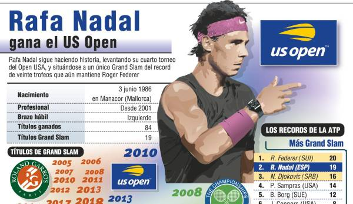

Rafa Nadal
El Ganador de 19 Grand Slams
Rafa Nadal es el mejor tenista de la historia de España, y uno de los mejores de la historia de este deporte. El balear ha conseguido hasta ahora 19 títulos de Grand Slam. En la actualidad, solo le supera el suizo Roger Federer. Hay que tener en cuenta, que el español tiene ya más de 33 años, pero con el 2019 que ha hecho, se diría que tiene cuerda para mucho más.
Este no es el único record que posee el español, pues es también el tenista que más torneos de categoría 1000 (Masters) posee en la historia (35).

El manacorense es el jugador que más títulos ha logrado en la tierra batida parisina (12), pero también ha conseguido 4 campeonatos en el torneo de Grand Slam estadounidense y 2 en la hierba de Wimbledon y sin olvidar, aquel triunfo en el memorial partido contra Roger Federer en el Open de Australia de 2009. Su palmarés no acaba aquí, pues también ha conseguido ganar con España cinco Copas Davis, y dos medallas de oros en unos juegos olimpicos; una en los de Pekín 2008, y la otra en la modalidad de dobles junto a Marc López en Río 2016.
| Roland Garros | U.S. Open | Wimbledon | Open de Australia | |||||||
| 12 | 4 | 2 | 1 | |||||||
| Montecarlo-11 | Roma-8 | Madrid-5 | Canadá (Montreal y Toronto)-5 | Indian Wells-3 | Hamburgo-1) | Cincinnati-1 |